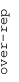
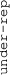

These results are also available as PDF and EPS documents.
Depending on your display resolution, scrolling or zooming may be necessary.
|  |
| 3 |
| 0 |
| -3 |
|  |
| GO_EXTRACELLULAR_MATRIX_STRUCTURAL_CONSTITUENT GO_EXTRACELLULAR_MATRIX_STRUCTURAL_CONSTITUENT | |||||||||||
| GO_CARGO_RECEPTOR_ACTIVITY GO_CARGO_RECEPTOR_ACTIVITY | |||||||||||
| GO_ADENYLATE_CYCLASE_INHIBITING_G_PROTEIN_COUPLED_RECEPTOR_SIGNALING_PATHWAY GO_ADENYLATE_CYCLASE_INHIBITING_G_PROTEIN_COUPLED_RECEPTOR_SIGNALING_PATHWAY | |||||||||||
| GO_SOLUTE_SODIUM_SYMPORTER_ACTIVITY GO_SOLUTE_SODIUM_SYMPORTER_ACTIVITY | |||||||||||
| GO_SPHINGOLIPID_TRANSPORTER_ACTIVITY GO_SPHINGOLIPID_TRANSPORTER_ACTIVITY | |||||||||||
| GO_TRANSMEMBRANE_RECEPTOR_PROTEIN_KINASE_ACTIVITY GO_TRANSMEMBRANE_RECEPTOR_PROTEIN_KINASE_ACTIVITY | |||||||||||
| GO_COLLAGEN_CATABOLIC_PROCESS GO_COLLAGEN_CATABOLIC_PROCESS | |||||||||||
| GO_E_BOX_BINDING GO_E_BOX_BINDING | |||||||||||
| GO_REGULATION_OF_KETONE_BIOSYNTHETIC_PROCESS GO_REGULATION_OF_KETONE_BIOSYNTHETIC_PROCESS | |||||||||||
| GO_AUTOPHAGOSOME GO_AUTOPHAGOSOME | |||||||||||
| GO_AZUROPHIL_GRANULE GO_AZUROPHIL_GRANULE | |||||||||||
| GO_ENDOPLASMIC_RETICULUM_QUALITY_CONTROL_COMPARTMENT GO_ENDOPLASMIC_RETICULUM_QUALITY_CONTROL_COMPARTMENT | |||||||||||
| GO_PHAGOSOME_MATURATION GO_PHAGOSOME_MATURATION | |||||||||||
| GO_LAMELLIPODIUM GO_LAMELLIPODIUM | |||||||||||
| GO_REGULATION_OF_PROTEIN_KINASE_C_SIGNALING GO_REGULATION_OF_PROTEIN_KINASE_C_SIGNALING | |||||||||||
| GO_NEGATIVE_REGULATION_OF_NEUROINFLAMMATORY_RESPONSE GO_NEGATIVE_REGULATION_OF_NEUROINFLAMMATORY_RESPONSE | |||||||||||
| GO_ESTABLISHMENT_OF_PROTEIN_LOCALIZATION_TO_ENDOPLASMIC_RETICULUM GO_ESTABLISHMENT_OF_PROTEIN_LOCALIZATION_TO_ENDOPLASMIC_RETICULUM | |||||||||||
| GO_OXIDATIVE_PHOSPHORYLATION GO_OXIDATIVE_PHOSPHORYLATION | |||||||||||
| GO_MEMBRANE_COAT GO_MEMBRANE_COAT | |||||||||||
| GO_GOLGI_CISTERNA GO_GOLGI_CISTERNA | |||||||||||
| GO_NCRNA_TRANSCRIPTION GO_NCRNA_TRANSCRIPTION | |||||||||||
| GO_MONOCARBOXYLIC_ACID_BINDING GO_MONOCARBOXYLIC_ACID_BINDING | |||||||||||
| GO_DETECTION_OF_BIOTIC_STIMULUS GO_DETECTION_OF_BIOTIC_STIMULUS | |||||||||||
| GO_DEOXYRIBONUCLEOTIDE_METABOLIC_PROCESS GO_DEOXYRIBONUCLEOTIDE_METABOLIC_PROCESS | |||||||||||
| GO_METHYLTRANSFERASE_COMPLEX GO_METHYLTRANSFERASE_COMPLEX | |||||||||||
| GO_RNA_BINDING_INVOLVED_IN_POSTTRANSCRIPTIONAL_GENE_SILENCING GO_RNA_BINDING_INVOLVED_IN_POSTTRANSCRIPTIONAL_GENE_SILENCING | |||||||||||
| GO_ODORANT_BINDING GO_ODORANT_BINDING | |||||||||||
| GO_HEMOGLOBIN_COMPLEX GO_HEMOGLOBIN_COMPLEX | |||||||||||
| GO_TYPE_I_INTERFERON_RECEPTOR_BINDING GO_TYPE_I_INTERFERON_RECEPTOR_BINDING | |||||||||||
| GO_KERATIN_FILAMENT GO_KERATIN_FILAMENT | |||||||||||
| GO_HORMONE_ACTIVITY GO_HORMONE_ACTIVITY | |||||||||||
| GO_STRUCTURAL_CONSTITUENT_OF_EYE_LENS GO_STRUCTURAL_CONSTITUENT_OF_EYE_LENS | |||||||||||
| GO_SERINE_TYPE_ENDOPEPTIDASE_INHIBITOR_ACTIVITY GO_SERINE_TYPE_ENDOPEPTIDASE_INHIBITOR_ACTIVITY | |||||||||||
| GO_ANCHORED_COMPONENT_OF_MEMBRANE GO_ANCHORED_COMPONENT_OF_MEMBRANE | |||||||||||
| GO_SENSORY_PERCEPTION_OF_TASTE GO_SENSORY_PERCEPTION_OF_TASTE | |||||||||||
| GO_GRANULOCYTE_MIGRATION GO_GRANULOCYTE_MIGRATION | |||||||||||
| GO_CONNEXIN_COMPLEX GO_CONNEXIN_COMPLEX | |||||||||||
| GO_EXCITATORY_SYNAPSE GO_EXCITATORY_SYNAPSE | |||||||||||
| GO_TACHYKININ_RECEPTOR_SIGNALING_PATHWAY GO_TACHYKININ_RECEPTOR_SIGNALING_PATHWAY | |||||||||||
| GO_PEPTIDASE_COMPLEX GO_PEPTIDASE_COMPLEX | |||||||||||
| GO_TRANSLATIONAL_TERMINATION GO_TRANSLATIONAL_TERMINATION | |||||||||||
| GO_PROTEIN_LOCALIZATION_TO_MITOCHONDRION GO_PROTEIN_LOCALIZATION_TO_MITOCHONDRION | |||||||||||
| GO_NUCLEOSOME_ORGANIZATION GO_NUCLEOSOME_ORGANIZATION | |||||||||||
| GO_MIRNA_BINDING GO_MIRNA_BINDING | |||||||||||
| GO_CENTRIOLE GO_CENTRIOLE | |||||||||||
| GO_ESTABLISHMENT_OF_PROTEIN_LOCALIZATION_TO_TELOMERE GO_ESTABLISHMENT_OF_PROTEIN_LOCALIZATION_TO_TELOMERE | |||||||||||
| GO_PHOSPHATASE_COMPLEX GO_PHOSPHATASE_COMPLEX | |||||||||||
| GO_NUCLEAR_IMPORT_SIGNAL_RECEPTOR_ACTIVITY GO_NUCLEAR_IMPORT_SIGNAL_RECEPTOR_ACTIVITY | |||||||||||
| GO_NUCLEAR_EXPORT GO_NUCLEAR_EXPORT | |||||||||||
| GO_DNA_INTEGRITY_CHECKPOINT GO_DNA_INTEGRITY_CHECKPOINT | |||||||||||
| GO_NUCLEOTIDE_EXCISION_REPAIR_DNA_DAMAGE_RECOGNITION GO_NUCLEOTIDE_EXCISION_REPAIR_DNA_DAMAGE_RECOGNITION | |||||||||||
| GO_SISTER_CHROMATID_SEGREGATION GO_SISTER_CHROMATID_SEGREGATION | |||||||||||
| GO_SUMO_BINDING GO_SUMO_BINDING | |||||||||||
| GO_TRANSLATION_INITIATION_FACTOR_ACTIVITY GO_TRANSLATION_INITIATION_FACTOR_ACTIVITY | |||||||||||
| GO_PRERIBOSOME GO_PRERIBOSOME | |||||||||||
| GO_PHOSPHOPROTEIN_BINDING GO_PHOSPHOPROTEIN_BINDING | |||||||||||
| GO_GLUTAMINE_METABOLIC_PROCESS GO_GLUTAMINE_METABOLIC_PROCESS | |||||||||||
| GO_TRNA_METABOLIC_PROCESS GO_TRNA_METABOLIC_PROCESS | |||||||||||
| GO_HELICASE_ACTIVITY GO_HELICASE_ACTIVITY | |||||||||||
| GO_PEPTIDYL_METHIONINE_MODIFICATION GO_PEPTIDYL_METHIONINE_MODIFICATION | |||||||||||
| GO_PRENYLTRANSFERASE_ACTIVITY GO_PRENYLTRANSFERASE_ACTIVITY | |||||||||||
| GO_HOMOPHILIC_CELL_ADHESION_VIA_PLASMA_MEMBRANE_ADHESION_MOLECULES GO_HOMOPHILIC_CELL_ADHESION_VIA_PLASMA_MEMBRANE_ADHESION_MOLECULES | |||||||||||
| GO_AXONEME_ASSEMBLY GO_AXONEME_ASSEMBLY | |||||||||||
| GO_VOLTAGE_GATED_ION_CHANNEL_ACTIVITY GO_VOLTAGE_GATED_ION_CHANNEL_ACTIVITY | |||||||||||
| GO_SPECIFICATION_OF_ANIMAL_ORGAN_IDENTITY GO_SPECIFICATION_OF_ANIMAL_ORGAN_IDENTITY |